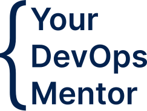

Advance your career in AWSl
Connect with DevOps experts and boost your career
You want to begin, develop, or high-power your career in DevOps—but where to start? Books and self-guided online courses are an option, but the choices can be overwhelming and the concepts challenging without external support and problem-solving. At Your DevOps Mentor, we believe in personalized, individual-level approaches to career growth. We develop plans around you and your specific goals to streamline your career development process—making finding a job in DevOps faster, easier, and more fulfilling.
Apply now